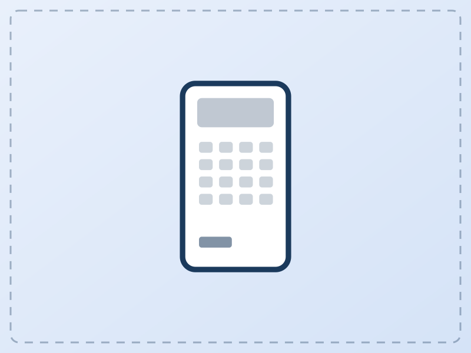
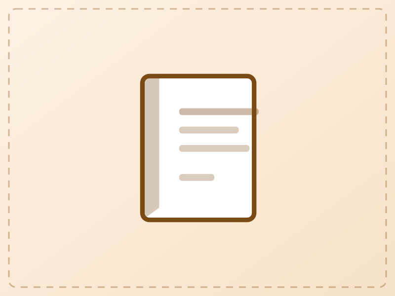
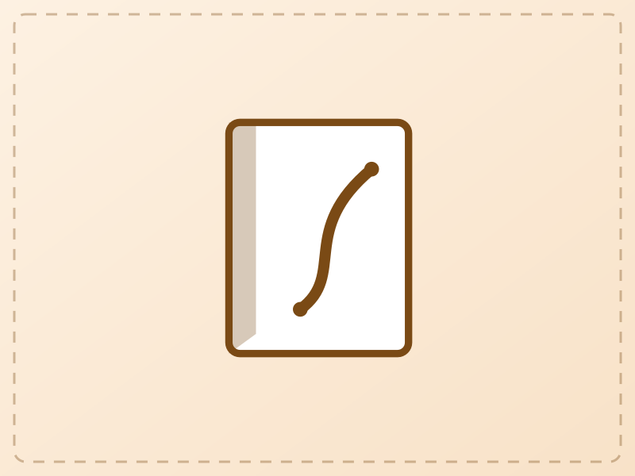
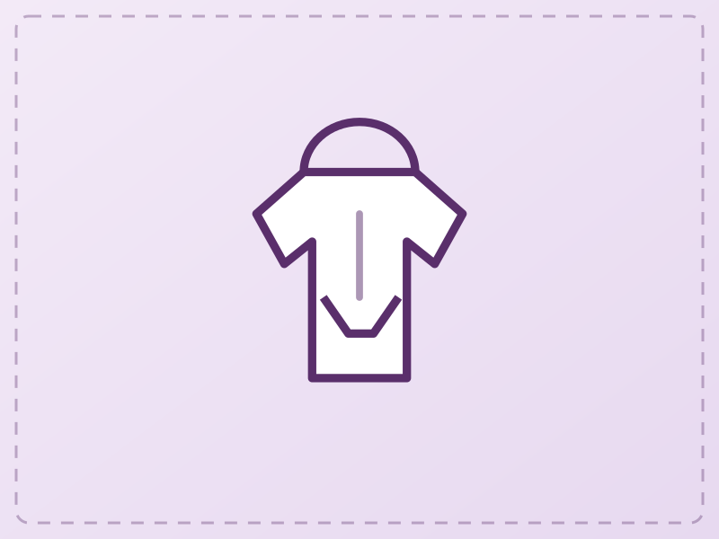

Listing gallery
All 8 listings as pictures, one at a time. This page is the Week 4 feature: a slideshow built from the same select and manipulate pattern used for filtering and the cart, plus the media rules that keep images and sound from breaking the layout.
Listing pictures







No JavaScript, no buttons, no dots: every picture is
display: none in the stylesheet except the first, so this is the
same fallback you would get with scripting turned off. Use the arrow keys when a
control has focus.
How this works
Select once, then manipulate the whole set
1. Select the set
One query grabs every slide by its shared
data-gallery-slide attribute, so the same code drives 8 pictures
or 80.
2. Hide all, show one
Every slide gets is-active removed, then the
one matching the counter gets it back. CSS decides what is-active
looks like, so there are no inline styles.
3. Wrap around
The counter is taken modulo the number of slides, so Previous on the first picture lands on the last one instead of stopping.
Transitions and animations
Two different jobs
A transition has exactly two states. It needs something to
trigger it, such as :hover or :focus-within, and it
runs once. Hover a product card in the
listings: it lifts six pixels and the shadow
deepens, because the card declares transition: transform, box-shadow
and the hover rule only states the end state.
An animation can have as many stops as you like and needs no
trigger. The small green dot beside the result count in
All products pulses on a loop, from an
@keyframes block that defines the ring expanding and fading at
0%, 50% and 100%.
JavaScript drives the third case. CSS cannot react to “saved this item” on its own, so the watchlist button on the product page adds a class and lets CSS do the rest. The pattern is the same select and manipulate one as the filter, just changing a class instead of a value.
Try the transitions
The first two are links and buttons you can move a cursor over. The clearest transition on the page is the active dot under the picture: it widens from a 10 pixel circle to a 30 pixel pill, and that width change is transitioned rather than snapped. Step through the gallery and watch it move.
Motion is optional
Every animation here stops if your operating system asks for reduced motion. Nothing on this site is only available while it moves, and no motion carries information that the text does not also carry.
Media on the page
Rules that stop a layout breaking
Size images to the box they sit in, not the other way round. One rule in the stylesheet does most of the work:
img, svg, video { max-width: 100%; height: auto; }
Without it, a single picture taken on a phone at full resolution is wider than a phone screen and shoves the whole page sideways. This is the most common way a marketplace page breaks on a small screen.
Give every picture an alt attribute. It is not decoration. A screen reader announces it, and it is the text that shows if the file fails to load. The eight pictures above total 10 KB, which is why this page stays quick; a single unoptimised phone photo is often larger than all the HTML and CSS in this project put together.
State the width and height too. The browser then reserves the right box before the file arrives, so the caption does not jump down the page as each picture loads.
Sound, with controls
A 1.5 second confirmation tone, 24 KB, 8 kHz mono PCM.
The controls attribute gives play, pause and volume without
building any of it, and preload="none" means the file is only
fetched if you actually press play. Autoplay is deliberately not used:
browsers block it, and it is rude.
Why SVG, and what changes later
There are no real photographs yet, so these eight
pictures are vector placeholders I generated. They are a few hundred bytes
each and stay sharp at any size. When real seller photos arrive with the
database in Week 7, they will be .webp with a
.jpg fallback, resized to the box they display in. The listing
cards still use the lightweight coloured blocks, so the catalog pages do
not pay for eight downloads.
Web 2.0
Not this week, but worth naming
Web 1.0 was one way: the site published, you read. Web 2.0 is the shift to sites you take part in, where visitors contribute the content too. Reviews, ratings, comments and uploads are all Web 2.0.
CampusMarket is still a Web 1.0 site. Every listing here is hard written into the HTML, and nothing anyone does can change it for anyone else. That is honest at this stage rather than a shortcut: real reviews need a database to store them, and that is Week 9. Until then a rating can only be decoration, so this page deliberately does not fake one.
Star ratings: what they will need
A rating that means nothing yet. The real version
needs a reviews table, a one-rating-per-user rule, and a
decision about whether sellers can reply.
The stars above are marked
aria-hidden on purpose: a screen reader should hear “Reviews:
what they will need” rather than five meaningless star characters.